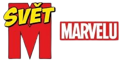

Důležité informace o webu
Vítejte na našich webových stránkach, občas mohou být chyby, jelikož web neustále vyvíjíme.

Tento web je vytvořený od fanoušků pro fanoušky. Slouží jako váš ultimátní průvodce úžasným světem superhrdinů, padouchů a nekonečných příběhů, které nás fascinují už desítky let.
Vše začalo v roce 1939, kdy Martin Goodman založil vydavatelství Timely Comics. V 60. letech se společnost přejmenovala na Marvel Comics a díky legendám, jako byli Stan Lee, Jack Kirby a Steve Ditko, se zrodili hrdinové, kteří měli i přes své superschopnosti skutečné lidské problémy – Spider-Man, X-Men, Fantastická čtyřka nebo Hulk. Od té doby se Marvel stal obrovským fenoménem, který dobyl nejen stránky komiksů, ale i stříbrná plátna kin.
Pro lepší přehlednost jsme náš web rozdělili do dvou hlavních sekcí, na které se snadno prokliknete v našem horním menu:
Vítejte na našich webových stránkach, občas mohou být chyby, jelikož web neustále vyvíjíme.